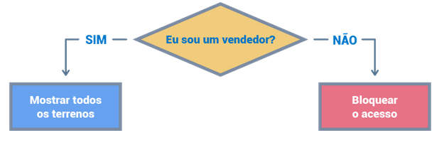
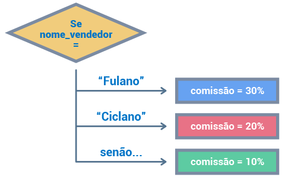

Anterior: Senac: Segurança do banco de dados - usuarios e permissões de acesso Proxima: Senac: Transações e locks Raiz: Auxilar na administração de banco de dados
É possível escrever regras lógicas em um banco de dados. Além das funcionalidades básicas de manipulação de dados e definição de dados também é possível criar instruções complexas para potencializar as capacidades de um banco de dados por meio de regras condicionais, laços de repetição, variaveis e outros conceitos de programação.
Apesar de utilizarmos o MYSQL para o estudo, a programação em SQL se aplica para qualquer banco de dados relacional que possua suporte para scripting, como o PostgreSQL, Microsoft SQL Server, Oracle DB e outros.
Também é importante salientar que existem pequenas diferenças na sintaxe da SQL (structured query language) quando comparada aos diferentes SGBDs. Isso quer dizer que as instruções podem não ser exatamente iguais, mudando algumas palavras ou a sua ordem. Entretanto, as instruções são semanticamente semelhantes
Criando uma nova database "senacterrenos", suas tabelas, e criando populações básicas
CREATE DATABASE senac_terrenos;
USE senac_terrenos;
CREATE TABLE vendedores (
id INT(6) UNSIGNED AUTO_INCREMENT PRIMARY KEY,
nome VARCHAR(25) NOT NULL
);
CREATE TABLE cidades (
id INT(6) UNSIGNED AUTO_INCREMENT PRIMARY KEY,
nome VARCHAR(25) NOT NULL,
UF CHAR(2) NOT NULL,
custo_metro_quadrado DECIMAL(6,2) NOT NULL
);
CREATE TABLE terrenos(
id INT(6) UNSIGNED AUTO_INCREMENT PRIMARY KEY,
id_cidade INT(6) UNSIGNED,
largura DECIMAL(8,2) NOT NULL,
comprimento DECIMAL(8,2) NOT NULL,
vendido BOOL NOT NULL DEFAULT FALSE,
FOREIGN KEY(id_cidade) REFERENCES cidades(id)
);
CREATE TABLE vendas(
id INT(6) UNSIGNED AUTO_INCREMENT PRIMARY KEY,
id_terreno INT(6) UNSIGNED,
id_vendedor INT(6) UNSIGNED,
vendido_em DATETIME NOT NULL,
valor_total DECIMAL(24,2) NOT NULL,
FOREIGN KEY(id_terreno) REFERENCES terrenos(id),
FOREIGN KEY(id_vendedor) REFERENCES vendedores(id)
);
INSERT INTO vendedores(nome) VALUES ("Fulano");
INSERT INTO vendedores(nome) VALUES ("Ciclano");
INSERT INTO vendedores(nome) VALUES ("Beltrano");
INSERT INTO cidades (nome, UF, custo_metro_quadrado)
VALUES ("Porto Alegre", "RS", 6416.49);
INSERT INTO terrenos (id_cidade, largura, comprimento, vendido)
VALUES (1, 12, 4, false);Os blocos de código são o lugar onde devem ser criados os programas em sql
Quando utilizamos as funções básicas de manipulação de dados (SELEC, INSERT, etc..) estamos utilizando instruções simples, isso significa que há um unico comando com um unico objetivo
Na programação em SQL utilizam-se instruções compostas. Por isso é necessário definir blocos de código
Criando um bloco de código
CREATE PROCEDURE nome_procedure(parametros\)
BEGIN
instrucoes
ENDExemplo:
CREATE PROCEDURE minha_procedure()
BEGIN
DECLARE id_porto_alegre INT UNSIGNED DEFAULT 12;
SELECT id_porto_alegre;
END;No entanto, de primeira esse código não funcionára. Isso ocorre pois o Mysql entende como delimitador padrão o caractere ";". No caso esse delimitador está sendo utilizado de forma ambigua, tanto para encerarr uma linha como em "DECLARE…12;" como para encerrar o bloco de código. Para sobrescrever esse comportamento devemos utilizar a instrução DELIMITER que altera o delimitador padrão de um bloco de código.
DELIMITER //
CREATE PROCEDURE minha_procedure()
BEGIN
DECLARE id_porto_alegre INT UNSIGNED DEFAULT 12;
SELECT id_porto_alegre;
END;
//Agora podemos destrinchar o código:
Testando:
CALL minha_procedure()| idportoalegre |
|---|
| 12 |
Existem tipos de dados específicos para grandes quantidades de caracteres (como, por exemplo, o conteúdo de uma publicação em um blog). Nesses casos, evite o uso do VARCHAR e procure por outras opções, como text.
O comando para declarar variaveis dentro de um bloco de código SQL é o DECLARE e segue a seguinte sintaxe básica:
DECLARE nome_variavel TIPO OPÇÕES;Exemplo:
DECLARE salario DECIMAL(5,2)Utilizando opções
DEFAULT
DECLARE salario DECIMAL(5,2) DEFAULT 150.99Para atribuir novos valores a uma variavel utilizamos o comando SET
DECLARE nome_variavel VARCHAR(25) DEFAULT "valor inicial";
SET nome_variavel = "novo valor";O comando SET também permite o trabalho com operações matematicas com valores literais ou utilizando outras variaveis
DECLARE idade INT;
DECLARE ano_nascimento INT;
DECLARE ano_atual INT DEFAULT 2023;
SET ano_nascimento = 1998
SET idade = ano_atual - ano_nascimento; Outra forma atribuir valores a uma variavel é utilizando querys sql com o comando INTO
DELIMITER //
CREATE PROCEDURE busca_nome_vendedor()
BEGIN
DECLARE variavel_nome VARCHAR(25);
SELECT nome INTO variavel_nome FROM vendedores WHERE id=1;
SELECT variavel_nome;
END//
DELIMITER ; CALL busca_nome_vendedor(); | variavelnome |
|---|
| Fulano |
Em instruções semelhantes ao exemplo anterior, não nomeie as suas variáveis com o mesmo nome das colunas. Quando você tiver uma coluna e uma variável com o mesmo nome em uma instrução, o MySQL enxergará apenas a variável e você não conseguirá acessar o valor da coluna.
DELIMITER //
CREATE PROCEDURE busca_nome_vendedor_set()
BEGIN
DECLARE variavel_nome VARCHAR(25);
SET variavel_nome := (SELECT nome FROM vendedores WHERE id = 1);
SELECT variavel_nome;
END//
DELIMITER ;
CALL busca_nome_vendedor_set();| variavelnome |
|---|
| Fulano |
É importante perceber que, até o momento, estão sendo atribuídos apenas valores singulares, ou seja, uma coluna por vez. Tanto no exemplo do comando INTO quanto no exemplo do comando SET, foi utilizada a coluna "nome" em uma consulta que retornou apenas um resultado (isso porque a consulta foi realizada com a condição WHERE relacionada a uma chave primária - logo, um valor único).
É possivel armazenar o resultado de multiplas colunas em variaveis utilizando apenas uma query SQL através do comando INTO utilizando a seguinte sintaxe:
DECLARE var_um
DECLARE var_dois
SELECT valor_um, valor_dois INTO var_um, var_dois FROM tabela WHERE filtroExemplo:
DELIMITER //
CREATE PROCEDURE buscar_dados_vendedor ()
BEGIN
DECLARE v_nome VARCHAR(25);
DECLARE v_email VARCHAR(255);
SELECT nome, email INTO v_nome, v_email
FROM vendedores WHERE id = 1;
SELECT v_nome, v_email;
END//
DELIMITER ;Testando:
CALL buscar_dados_vendedor()Diferentemente das variáveis locais, as variáveis de usuário existem também fora de um bloco de código. Isso acontece porque variáveis de usuário existem dentro de uma sessão de usuário. Sendo assim, pode-se declarar uma variável de usuário em uma instrução e utilizá-la em outra, pois variáveis de usuário não precisam de um bloco de código e podem ser utilizadas em diferentes instruções, compartilhando valores entre elas. Além disso, as variáveis de usuário não têm uma tipagem forte, ou seja, elas não têm tipos de dados definidos na sua declaração. Isso acontece porque variáveis de usuário não são declaradas, são apenas inicializadas.
SET @ola = "Olá mundo"SET @ola = "Olá mundo";
SELECT @ola; | @ola |
|---|
| Olá mundo |
SET @var_nome = "Ronaldo";
SET @var_email = "fenomeno@gmail.com";
INSERT INTO vendedores(nome, email) VALUES (@var_nome, @var_email);
SELECT * FROM vendedores;| id | nome | |
|---|---|---|
| 1 | Fulano | asd@gmail.com |
| 2 | Ciclano | xcv@gmail.com |
| 3 | Beltrano | fgh@gmail.com |
| 4 | Ronaldo | fenomeno@gmail.com |
As variaveis de usuário são alteradas da mesma forma que Variavies locais, ou seja, através do comando SET ou utilizando uma query SQL e fazendo o pipe através do comando INTO
SET @ola = "Ola mundo";
SELECT @ola;
SET @ola = "Hello World";
SELECT @ola;| @ola |
| Ola mundo |
| @ola |
| Hello World |
Ou ainda
SET @var_nome = "Nao disponivel";
SET @var_email = "Nao disponivel";
SELECT nome,email INTO @var_nome,@var_email FROM vendedores WHERE id = 4;
SELECT @var_nome, @var_email;| @varnome | @varemail |
|---|---|
| Ronaldo | fenomeno@gmail.com |
Variáveis de usuário também podem ser inicializadas através de uma query SQL
SET @var_nome := (SELECT nome FROM vendedores WHERE id = 4);
SELECT @var_nome;| @varnome |
|---|
| Ronaldo |
Os IF statements tem a semântica clássica de um uma condicional em qualquer liguagem de programação e a sintaxe basica segue o seguinte
IF condição = comparação THEN
comandos;
END IF;DELIMITER //
CREATE PROCEDURE condicional_if()
BEGIN
DECLARE numero INT DEFAULT 1;
IF numero = 1 THEN
SET numero := 2;
END IF;
SELECT numero;
END//
DELIMITER ;
CALL condicional_if() | numero |
|---|
| 2 |
IF condição THEN
codigo caso verdadeiro;
ELSE
codigo caso falso;
END IFDELIMITER //
CREATE PROCEDURE condicional_if_else()
BEGIN
DECLARE numero INT DEFAULT 2;
IF numero = 1 THEN
SET numero := 2;
ELSE
SET numero :=3;
END IF;
SELECT numero;
END//
DELIMITER ;
CALL condicional_if_else() | numero |
|---|
| 3 |
Parenteses no texto: Utilizando parâmetros
Para criar uma função que utiliza parâmetros em SQL é necessário indicar o nome do parâmetro e logo em seguida o tipo de dados a ser utilizado. Sintaxe basica:
CREATE PROCEDURE procedure_com_paramentro(parametro TIPO)
CALL procedure_com_parametro(valor do tipo indicado) Veja o exemplo na sessão a seguir
Um if statment funciona como um diagrama de verdade, onde se uma informação for verdadeira um procedimento é executado, retornando uma nova informação, caso a informação inicial for falsa outro procedimento é executado, retornando outra informação 
Transformando o fluxograma em uma procedure SQL
DELIMITER //
CREATE PROCEDURE buscar_terrenos(id_vendedor INT)
BEGIN
DECLARE id_encontrado INT;
SELECT id INTO id_encontrado FROM vendedores WHERE id= id_vendedor;
IF id_encontrado IS NULL THEN
SELECT "Sem acesso" AS error;
ELSE
SELECT * FROM terrenos;
END IF;
END//
DELIMITER ; Verificando vendedores e seus ids
SELECT id, nome FROM vendedores Passando para a função um ID existente (1-4)
CALL buscar_terrenos(1); Passando para a função um id inexistente ( Maior que 4, menor que 1 )
CALL buscar_terrenos(5)| error |
|---|
| Sem acesso |
O ELSEIF é utilizado quando é mais de um caminho de verdade para a operação. Sua sintaxe basica é a seguinte:
IF condiçãoA THEN
codigo caso condiçãoA
ELSEIF condiçãoB THEN
codigo caso condiçãoB
ELSE
codigo caso falso
END IF
DELIMITER //
CREATE PROCEDURE buscar_comissao(id_vendedor INT)
BEGIN
DECLARE comissao DECIMAL(2,1) DEFAULT 1.0;
DECLARE nome_vendedor VARCHAR(25);
SELECT nome INTO nome_vendedor FROM vendedores WHERE id=id_vendedor;
IF nome_vendedor = "Fulano" THEN
SET comissao := 1.3;
ELSEIF nome_vendedor = "Ciclano" THEN
SET comissao := 1.2;
ELSEIF nome_vendedor = "Ronaldo" THEN
SET comissao := 9.0;
ELSE
SET comissao := 1.1;
END IF;
SELECT comissao;
END//
DELIMITER ;CALL buscar_comissao(4)| comissao |
|---|
| 9.0 |
CALL buscar_comissao(1)| comissao |
|---|
| 1.3 |
CALL buscar_comissao(3)| comissao |
|---|
| 1.1 |
As if functions utilizam a mesma lógica dos IF statments no entando sua utilização é outra. If functions retornam um valor para uma outra ou atribuição. Veja a sintaxe basica:
IF(condiçao, valor_caso_verdadeiro, valor_caso_falso)Exemplo
SELECT IF(10>1, "É maior", "É menor") AS Exemplo| Exemplo |
|---|
| É maior |
Exemplo prático
SELECT id, IF(nome="Ronaldo", "É o ronaldo", "Não é o Ronaldo") FROM vendedores AS Ronaldo| id | IF(nome="Ronaldo", "É o ronaldo", "Não é o Ronaldo") |
|---|---|
| 1 | Não é o Ronaldo |
| 2 | Não é o Ronaldo |
| 3 | Não é o Ronaldo |
| 4 | É o ronaldo |
DECLARE contador INT DEFAULT x
WHILE condição_atrelada_ao_contador DO
codigo
atualização do contador
END WHILE;Exemplificando: adicionando vários vendedores genéricos (nome atrelado ao contador) a a tabela "vendedores"
DELIMITER //
CREATE PROCEDURE inserir_vendedores()
BEGIN
DECLARE contador INT DEFAULT 5;
WHILE contador < 10 DO
INSERT INTO vendedores (nome) VALUES(CONCAT("Vendedor", contador));
SET contador = contador + 1;
END WHILE;
END//
DELIMITER ;Destrinchando
Testando:
Executando a procedure
CALL inserir_vendedores()Verificando:
SELECT id, nome FROM vendedoresUm LOOP é bem parecido com um WHILE mas possui duas diferenças
Sintaxe básica
rotulo_do_loop : LOOP
procedimento a ser repetido
IF condição de parada atingida THEN
LEAVE rotulo_do_loop
END IF
END LOOP rotulo_do_loop Útil para quando precisa-se executar um procedimento em uma tabela sem uma condição de parada previamente sabida.
Sintaxe básica
DELIMITER //
CREATE PROCEDURE nome_do_procedure()
BEGIN
codigo
END//
DELIMITER ;Destrinchando:
Excluindo um procedure
Tão simples quando
DROP PROCEDURE nome_do_procedure;Quando se cria um stored procedure, definem-se quais serão os parâmetros passados ao chamar a stored procedure, podendo ser zero ou mais parâmetros. Cada parâmetro terá um modo, um nome e um tipo de dado.
Parametros de entrada:
DELIMITER //
CREATE PROCEDURE utilizando_parametro(numA INT, numB INT)
BEGIN
SELECT numA+numB;
END//
DELIMITER ; CALL utilizando_parametro(4,5);
CALL utilizando_parametro(2,3);| numA+numB |
|---|
| 9 |
| numA+numB |
|---|
| 5 |
Parametros de saída
DELIMITER //
CREATE PROCEDURE procedure_com_parametro_de_saida(id_vendedor INT, OUT vendedor VARCHAR(25))
BEGIN
SELECT nome INTO vendedor FROM vendedores WHERE id = id_vendedor;
END//
DELIMITER ; CALL procedure_com_parametro_de_saida(1, @nome_vendedor)CALL procedure_com_parametro_de_saida(1, @nome_vendedor);
SELECT @nome_vendedor| @nomevendedor |
|---|
| Fulano |
Parametros de entrada e saida
Criando uma nova função de soma, mas agora com parametros INOUT
DELIMITER //
CREATE PROCEDURE procedure_inout(INOUT numero INT)
BEGIN
SET numero = numero +1;
END//
DELIMITER ; Utilizando:
SET @numero := 2;
CALL procedure_inout(@numero);
SELECT @numero;| @numero |
|---|
| 3 |
Exemplo
CREATE PROCEDURE exemplo()
BEGIN
SELECT 1 INTO @variavel_de_usuario;
ENDA estrutura de uma stored function é semelhante a uma stored procedure. Ambos armazenam instruções complexas
A a diferença entre elas é a forma de retorno.
Veja stored function a seguir
DELIMITER //
CREATE FUNCTION buscar_preco (id_terreno INT) RETURNS DECIMAL(24,2) DETERMINISTIC
BEGIN
DECLARE v_custo_m2 DECIMAL(6,2);
DECLARE v_largura INT;
DECLARE v_comprimento INT;
SELECT c.custo_metro_quadrado, t.largura, t.comprimento INTO v_custo_m2, v_largura, v_comprimento FROM terrenos t LEFT JOIN cidades c ON c.id = t.id_cidade WHERE t.id = id_terreno;
RETURN (v_comprimento * v_largura) * v_custo_m2;
END//
DELIMITER ;Ainda tratando da diferença de retorno: como uma stored function tem obrigatoriamente um retorno e um retorno de um tipo especifico ela pode substituir valores de maneira literal. Sendo assim para executar uma stored function utilizamos os comando SQL. Exemplos
SELECT buscar_preco(1);| buscarpreco(1) |
|---|
| 307991.52 |
Suponha que o terreno de id 1 foi vendido, e para saber o preço do terreno, a fim de inclui-lo na tabela venda campo valortotal, utilizare-mos a função buscar preço
INSERT INTO vendas (id_terreno, id_vendedor, vendido_em, valor_total) VALUES (1, 1, "2023-07-29 14:29:00", buscar_preco(1)); Agora suponha que precisamos buscar na tabela vendas a data de venda de terrenos com o valor maior ou igual a desse terreno
SELECT vendido_em FROM vendas WHERE valor_total >= buscar_preco(1) | vendidoem |
|---|
| 2023-07-29 14:29:00 |
Um trigger pode ser criado da seguinte maneira
CREATE TRIGGER nome_trigger CONDIÇÃO ON tabela Escopo
BEGIN
// o que fazer
ENDExemplo:
DELIMITER //
CREATE TRIGGER marcar_venda AFTER INSERT ON vendas FOR EACH ROW
BEGIN
UPDATE terrenos SET vendido = true WHERE id= NEW.id_terreno;
END//
DELIMITER ;